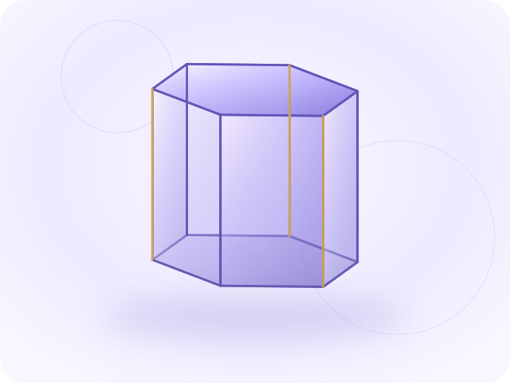
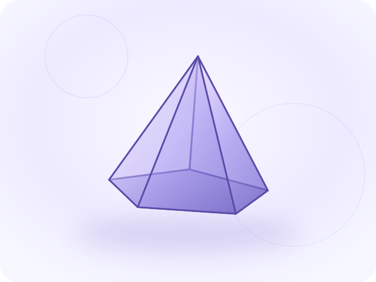
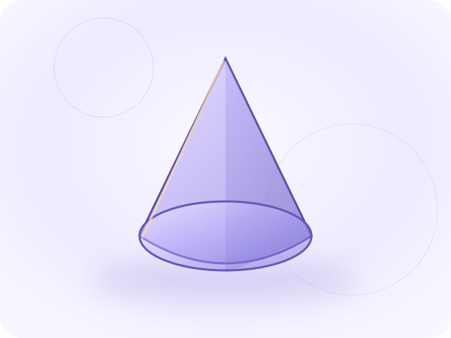
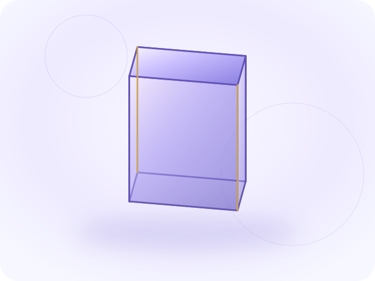
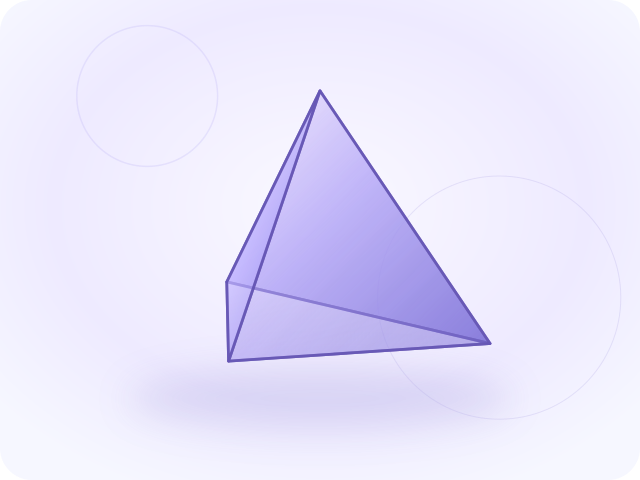
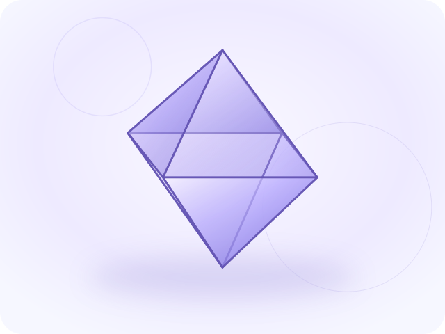

LABORATORIO INTERACTIVO · 8 FAMILIAS
Cada sólido tiene su propio universo.
Elige una figura para observarla, cambiar sus dimensiones y comprender sus fórmulas. Aprende primero, experimenta después y pon a prueba lo aprendido.

Prismas
Bases poligonales, altura e inclinación de aristas.
Entrar al laboratorio ↗
Pirámides
Vértice, apotema, aristas y caras triangulares.
Entrar al laboratorio ↗
Cilindros
Radio, altura, generatriz y desarrollo lateral.
Entrar al laboratorio ↗
Conos
Relación entre radio, altura y generatriz.
Entrar al laboratorio ↗
Esferas
Radio, diámetro y secciones de la esfera.
Entrar al laboratorio ↗
Cubos
Caras, diagonales y desarrollos planos.
Entrar al laboratorio ↗
Tetraedros
Cuatro caras triangulares y sus propiedades.
Entrar al laboratorio ↗
Octaedros
Ocho caras triangulares, aristas y volumen.
Entrar al laboratorio ↗¿Prefieres seguir una ruta de clases? Tus lecciones, problemas y avance siguen disponibles como siempre.
Ir a mis lecciones